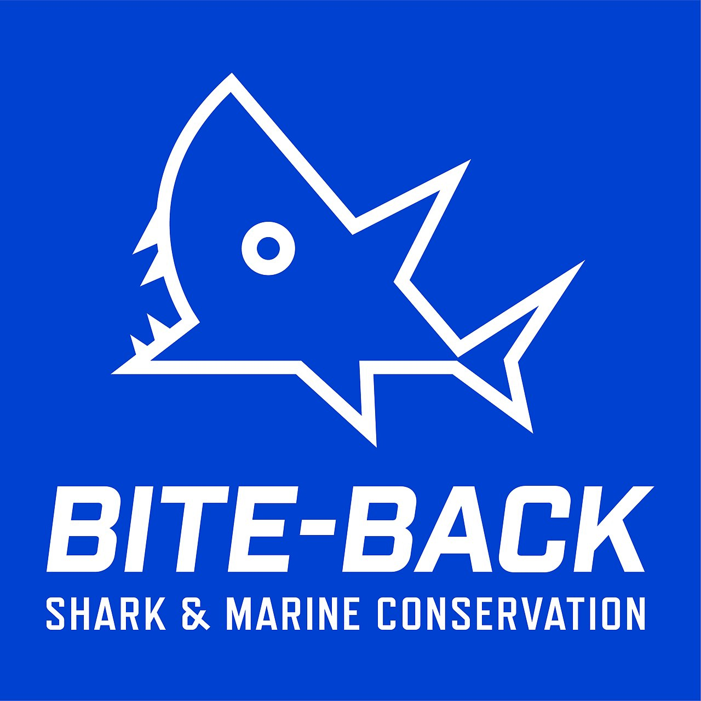

홈 > 브랜드 매거진 > Instacart
Instacart
인스타카트(Instacart)는 2012년 설립된 북미 식료품 배송·기술 기업으로, 제휴 매장에서 상품을 대신 구매해 배달한다. 2022년 새 아이덴티티는 Wolff Olins와 사내 스튜디오가 맡았다.
산업 분야 브랜드·비즈니스 · 공개 등급 편집 검수 · 브랜드 평가 4 ★
한눈에 보는 브랜드
인스타카트(Instacart)는 2012년 설립된 북미 식료품 배송·기술 기업으로, 사용자가 주문한 상품을 제휴 매장에서 대신 구매해 배달한다. 750곳이 넘는 소매 파트너와 수천 개 소비재 브랜드와 연계해 운영하며, 식료품을 넘어 뷰티·생활용품 등으로 카테고리를 확장해 왔다.
브랜드 관점
Instacart 항목은 기업 연혁보다 시각 아이덴티티의 완성도를 읽는 데 적합한 자료입니다. Designed by Wolff Olins 분류 안에서 어떤 브랜드가 로고, 타입, 컬러, 아트 디렉션, 애플리케이션을 하나의 시스템으로 묶는지 보여주며, 산업 정보와 별도로 BI/CI 디자인 레퍼런스 축을 형성합니다.
일부 상세 아이덴티티는 멤버십 잠금 상태로 기록되어 공개 메타데이터 중심으로만 정리됩니다.
브랜드 아이덴티티
2022년 인스타카트는 Wolff Olins와 사내 크리에이티브 스튜디오 협업으로 새 아이덴티티 시스템을 선보였으며, 핵심 콘셉트는 효율적 쇼핑과 정서적 만족을 결합한 'Shop+Savor(쇼핑하고 음미하다)'이다. 상징인 당근은 동적 심볼로 재해석되어, 잎 부분이 화살표로 기능해 카트에 무엇이든 담을 수 있음을 보여주고 뿌리의 부드러운 곡선은 '음미'를 표현한다.
타이포그래피로는 디자이너 Ryan Bugden과 함께 효율을 상징하는 Instacart Sans와 식욕을 자극하는 Instacart Contrast 두 개의 가변 글꼴 패밀리를 제작했고, 색상 팔레트는 음식에서 착안한 'Kale'(녹색)·'Turmeric'(노랑)·'Guava'(분홍) 등으로 구성된다.
제품과 서비스
Instacart 항목의 제품·서비스 정보는 일반 상품 카탈로그가 아니라 브랜드 아이덴티티 산출물 기준으로 정리됩니다. 전체 에셋 30개, 이미지 14개, 영상 16개, 로컬 저장 이미지 14개를 통해 정지 이미지와 영상 에셋의 비중을 확인할 수 있고, 이는 로고 적용, 컬러 시스템, 캠페인 톤, 패키지 또는 공간 적용 가능성을 검토하는 출발점이 됩니다.
사람들
타임라인
BI/CI 변천사
함께 읽을 브랜드
BO
BOL
브랜드·비즈니스 · 편집 검수BOLBOL는 2015년에 기록된 Designed by B&B Studio 계열의 브랜드 아이덴티티 사례입니다. B&B Studio가 아이덴티티 작업의 디자이너로 기록되어...
브랜드·비즈니스 · 편집 검수KirinKirin는 1984년에 기록된 Designed by PAOS 계열의 브랜드 아이덴티티 사례입니다. PAOS가 아이덴티티 작업의 디자이너로 기록되어 있습니다. 로고,...
Lo
Loot
브랜드·비즈니스 · 편집 검수LootLoot는 2023년에 기록된 Designed by Seachange 계열의 브랜드 아이덴티티 사례입니다. Seachange가 아이덴티티 작업의 디자이너로 기록되어...
 브랜드·비즈니스 · 편집 검수Popchips
브랜드·비즈니스 · 편집 검수PopchipsPopchips는 2013년에 기록된 Designed by Marx 계열의 브랜드 아이덴티티 사례입니다. Marx가 아이덴티티 작업의 디자이너로 기록되어 있습니다....
Ti
Tingz
브랜드·비즈니스 · 편집 검수TingzTingz는 2013년에 기록된 Designed by B&B Studio 계열의 브랜드 아이덴티티 사례입니다. B&B Studio가 아이덴티티 작업의 디자이너로 기록...
Ba
Bacàn
브랜드·비즈니스 · 편집 검수BacànBacàn는 2024년에 기록된 Designed by Pentagram 계열의 브랜드 아이덴티티 사례입니다. Pentagram가 아이덴티티 작업의 디자이너로 기록되어...
Be
Berg
브랜드·비즈니스 · 편집 검수BergBerg는 2022년에 기록된 Designed by Marx 계열의 브랜드 아이덴티티 사례입니다. Marx Design가 아이덴티티 작업의 디자이너로 기록되어 있습니...

브랜드·비즈니스 · 편집 검수Bite BackBite Back는 2023년에 기록된 Designed by Wolff Olins 계열의 브랜드 아이덴티티 사례입니다. Wolff Olins가 아이덴티티 작업의 디자...